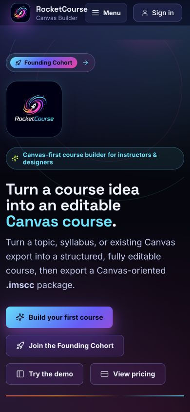
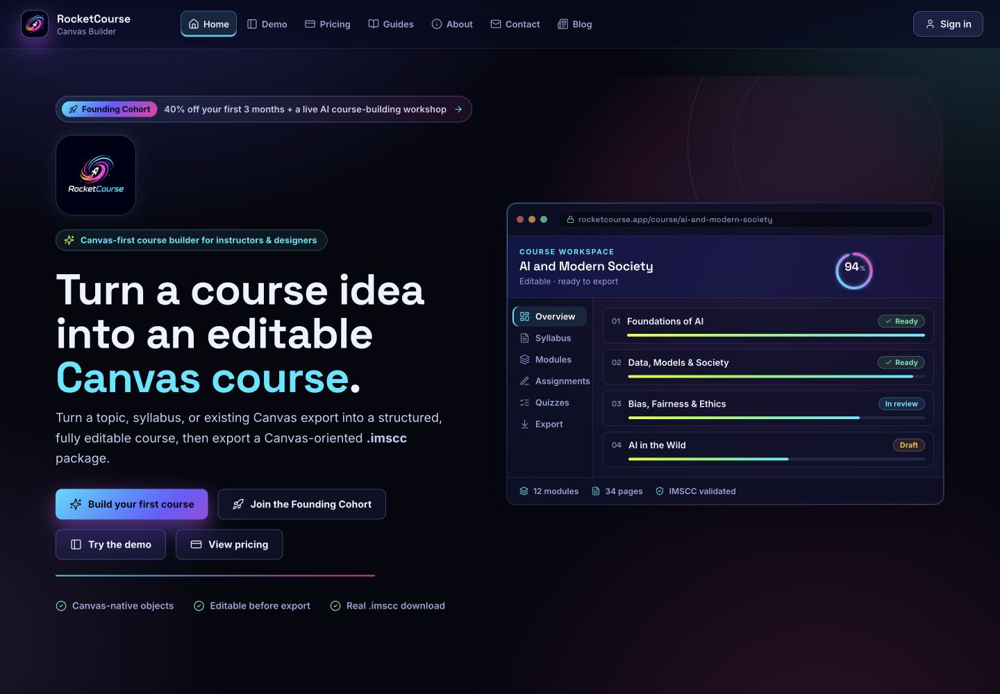
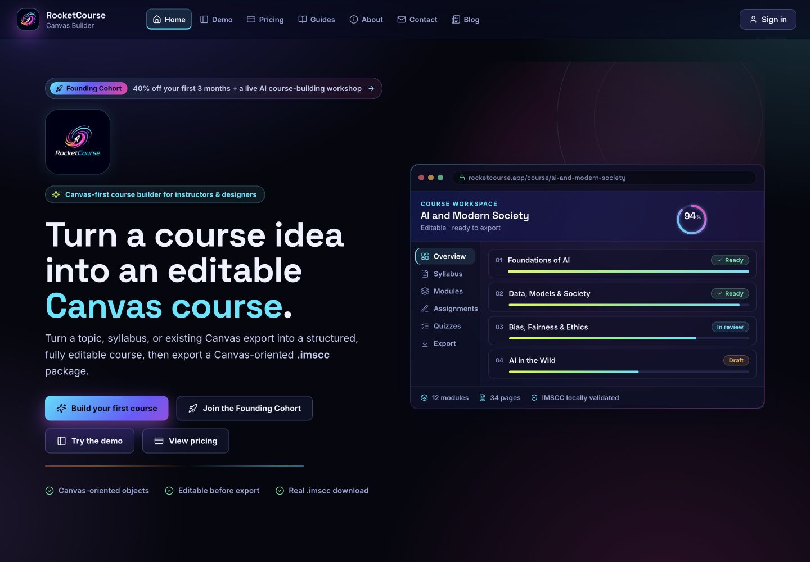

01 · CREATEHealthy
Guided by default
Advanced decisions stay progressively disclosed. The placebo contact-hours control was removed.
Repository-backed audit covering workflow clarity, control integrity, generation fidelity, readiness repair, keyboard accessibility, responsive behavior, and local IMSCC validation.
Each stage now explains what happens next, preserves user control, and has a verified route forward.
Advanced decisions stay progressively disclosed. The placebo contact-hours control was removed.
Course identity, readiness, and phase navigation stay coherent without asking for the same description twice.
Safe structural issues can be repaired together with a change summary and global Undo path.
Seven disciplines and edge cases export cleanly. A real Canvas sandbox import still requires owner access.
Captured at matched product states. The changes retain RocketCourse’s existing visual language.

Result: document width fell from 559px to exactly 390px; teaser controls and chips now wrap without cropping.


Result: public copy now says Canvas-oriented and locally validated instead of implying a verified production Canvas import.
Each repair includes automated or browser-based regression evidence.
Orientation discussion, schedule, module, and optional rubric references are now removed as one relationship.
“Fix all safe issues” now uses the existing repair transform, previews what changed, and points to Undo.
Welcome, review, and readiness dialogs now receive focus, trap Tab, close with Escape, and restore focus.
Empty assignments now recover with an escaped, subject-specific task/submission/success scaffold.
Responsive containment verified at 390, 1024, 1440, and 1920px with no horizontal document overflow.
Marketing and integration copy now separate local validation from the required Canvas sandbox test.
Regression coverage includes the seven required subjects and assessment-light / maximum-complexity edge cases.
No remaining item is a hidden production claim or unresolved P0/P1 defect.
Provide a blank sandbox and credentials before promoting “locally validated” to verified compatibility.
Authorize an entitled provider run if production OpenAI behavior should be verified with real spend.
The main JavaScript chunk remains approximately 1.44 MB and deserves a dedicated code-splitting pass.